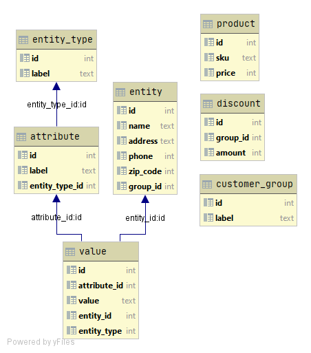

Premature optimization - the root of all evil. Or something like: we think that in the future we will need this and that feature, though in reality, in most cases, we do not.
Sometimes when you come to the project, you see EAV database design, and some developers hate it, some do not have an opinion, and the rest do not care. Majority of database designers and developers would tell you that you should use a typical relational model, with all its tooling available out of the box, instead of handcrafting everything on your own. I agree on that, but is there a case when EAV is good?
General description
EAV database model, as well known as ‘open schema’ or ‘vertical model’, describe entities where the number of all attributes in unknown and potentially significant, however number of attributes for a particular entity is small.
- What’s an entity? It could be another name for an object.
- What’s an attribute? It could be object property.
- And the value? Value of attribute.
- Why vertical model? Because the table usually consists of a few columns, but a large number of rows. Another say - “long and skinny”.
Developers sometimes use EAV in early design, where business requirements are not precise, or one of the stakeholders wants to have a generic flexible approach that would fit everything he might need (or not) in the future. When devs have a tight schedule or want to handle the unknown, the EAV model is very tempting. Database engineer, most likely knows what he is doing; therefore, carefully selects EAV over the relational model.
Example
I found a great explanation of EAV on youtube, made by Magento developer. Simple and clear, see EAV Zero to EAV Hero. At the end of the tutorial, he comes with a simple EAV model for e-commerce. Where entity describes customer. Discount and customer_group tables are just to have normalized table designs. And product is another entity. To differentiate between entity types (customer, product), we have entity_type table. The core of EAV are attribute, entity/product, value tables.

The great thing here is that, when we need to describe new information about customer (entity) or product, we do not need to alter the table, by adding new columns. There is as well no duplicated information. When we want to insert a new attribute, we do it directly to attribute and value tables.
One of the cons is that it is costly for performance, as it requires at least two queries with many joins (one to get all attributes, values and entities, and second to assemble them in a usable format). Another problem is that the data stored in the value table can have different types. To fix that Magento decided to split value table into additional value tables, one for a specific value type, for example, one for varchar, one for datetime etc. However, that makes a lot of additional queries to execute. And here Magento proposed to have another table called flat table, where it stores all data, and values could be taken by using a single select.
EAV Advantages
- Flexible mechanism, supports multiple projects, broad community.
- Little consideration of DB structure at the initial design stage.
- Database schema does not change, when model changes, allowing updates through for example web UI.
EAV Disadvantages
- Complexity - a high learning curve for new developers.
- Loose data validation that needs to be implemented later in the code.
- Performance - multiple join queries (though good cache system can improve it).
- Does not provide a way for grouping of related entity types.
- Does not provide a mechanism to create relationships between entities of different subtypes.
- Developers have to recreate relational database technology (graphical system tools, data security, incremental back-up and restore, exception handling, etc.).
- Often you cannot just use ORM, but write complex SQL queries.
Example use cases
- E-commerce (EAV in Magento)
- Clinical database
Summary
EAV modelling is an example of space (and schema maintenance) versus CPU-time tradeoff. So should we use it or not? Well, it depends, like with everything in software engineering. However, probably there are more cons than pros, and a number of good use cases are limited. A good example of usage is proposed by Magento for e-commerce; however, as we see even they need to use some hacks to make it work, and as a result they implement database inside the database anyway.
Resources: